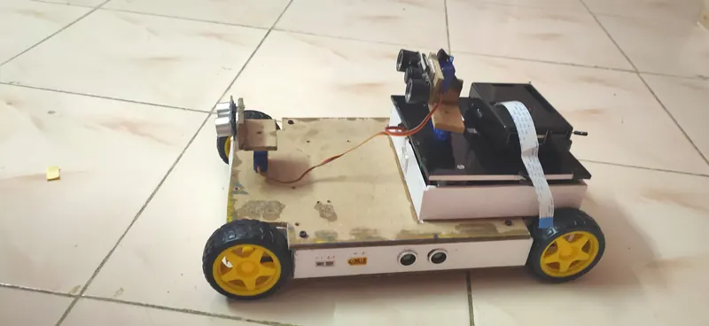
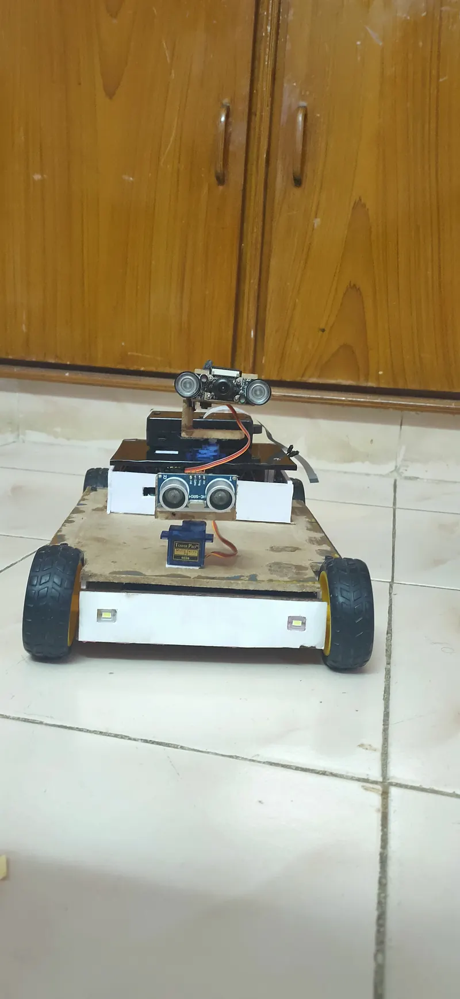
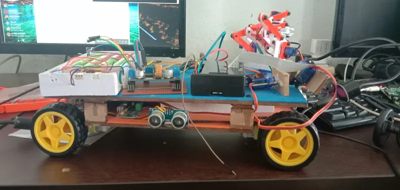
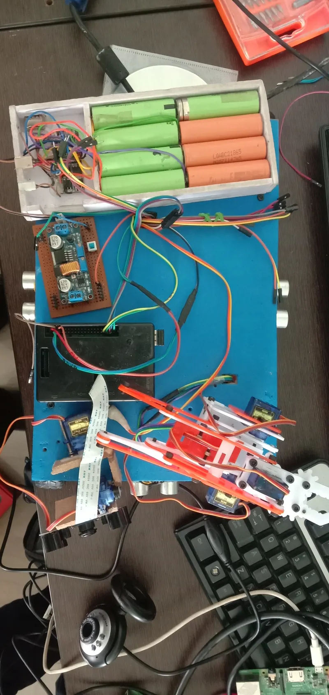
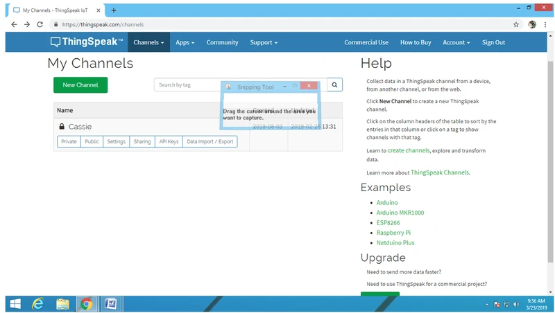
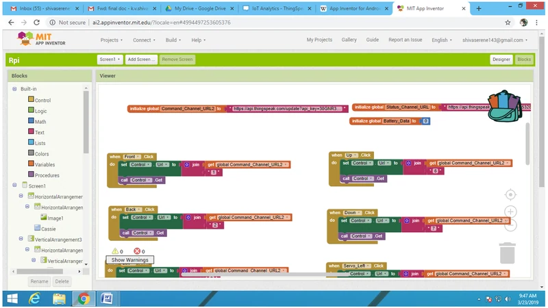
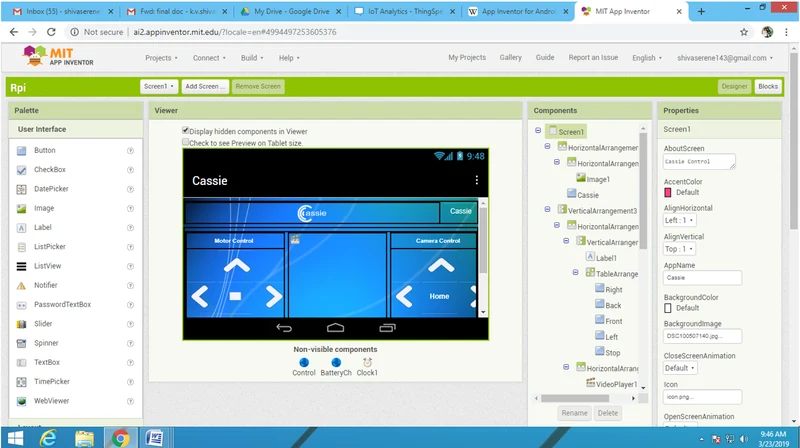
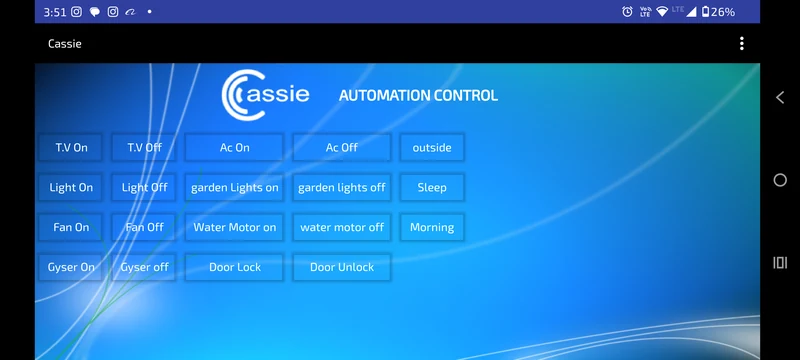

U8 · B.Tech final year project
Network Rover + Surveillance
A Wi-Fi controlled rover carrying live video, a pan-tilt camera and a robotic arm, with cloud telemetry and an eight-channel relay board for home automation — the project that pulled everything from four years together.

What it is
My B.Tech final-year project: three things in one build — a drivable rover with live video, a remotely operated robotic arm, and a home automation controller, all reachable over the network from one interface.
How it's split
A Raspberry Pi runs the Python side — camera streaming, cloud communication, command parsing. Arduino boards handle the real-time work: motors, servo timing, sensor polling. That split is what keeps the video from stuttering every time a motor changes direction.
The camera sits on a two-axis mount driven through an I²C servo controller, which keeps sixteen servo channels off the Pi's timing-sensitive GPIO. Ultrasonic and IR sensors handle obstacles; fire and temperature sensors cover the surveillance side.
Telemetry goes to a cloud service for logging and remote commands, and appliance switching is exposed through Google Assistant as well as the dashboard.
Power
A Li-ion pack with a BMS feeding a step-down converter. The rover runs motors, servos, a Pi and a camera at once, and the Pi is the first thing to brown out when the supply sags as the motors start.
Gallery






